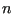
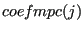
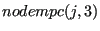
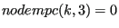
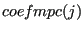
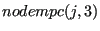
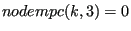

Next: Concentrated loads Up: Reading the step input Previous: SPC's Contents
Homogeneous linear equations are of the form
| (665) |
The variable  can be an arbitrary integer, i.e. the linear equation can
contain arbitrarily many terms. To store these equations (also called MPC's) the one-dimensional
field ipompc and the two-dimensional field nodempc, which contains three
columns, are used. For MPC i, row i in field ipompc contains
the row in field nodempc where the definition of MPC i starts: if
then the degree of freedom of the first term of the MPC
corresponds to direction
in node
 . The
coefficient of this term is stored in
. The value of
 is the row in field nodempc with the information of the next
term in the MPC. This continues until
 which means that the
term in row k of field nodempc is the last term of MPC i.
. The
coefficient of this term is stored in
. The value of
 is the row in field nodempc with the information of the next
term in the MPC. This continues until
 which means that the
term in row k of field nodempc is the last term of MPC i.
For example, consider the following MPC:
| (666) |
where stands for the displacement in global x-direction of node
number 10, similar for the other terms. Assume this MPC is equation number
 . Then, the storage of this equation
could look like in Figure 156.
. Then, the storage of this equation
could look like in Figure 156.
The first term in a MPC is special in that it is considered to be the dependent term. In the finite element calculations the degree of freedom corresponding to such a dependent term is written as a function of the other terms and is removed from the system of equations. Therefore, no other constraint can be applied to the DOF of a dependent term. The DOF's of the dependent terms of MPC's are catalogued in a similar way as those corresponding to SPC's. To this end, a one-dimensional field ikmpc is used containing the dependent degrees of freedom in numerical order, and a one-dimensional field ilmpc containing the corresponding MPC number. The meaning of these fields is completely analogous to ikboun and ilboun and the reader is referred to the previous section for details.
In addition, MPC's are labeled. The label of MPC i is stored in . This is a one-dimensional field consisting of character words of length 20 (in FORTRAN: character*20). The label is used to characterize the kind of MPC. Right now, the following kinds are used:
The MEANROT, PLANE and STRAIGHT MPC's are selected by the *MPC keyword card, a RIGID MPC is triggered by the *RIGID BODY keyword card, and a CYCLIC MPC by the *CYCLIC SYMMETRY MODEL card. A SUBCYCLIC MPC is not triggered explicitly by the user, it is determined internally in the program.
Notice that non-homogeneous MPC's can be reduced to homogeneous ones by introducing a new degree of freedom (introduce a new fictitious node) and assigning the inhomogeneous term to it by means of a SPC. Nonlinear MPC's can be transformed in linear MPC's by linearizing them [19]. In CalculiX this is currently done for PLANE MPC's, STRAIGHT MPC's, USER MPC's and RIGID BODY definitions. Notice that SPC's in local coordinates reduce to linear MPC's.
Finally, there is the variable icascade. It is meant to check whether the MPC's changed since the last iteration. This can occur if nonlinear MPC's apply (e.g. a coefficient is at times zero and at other times not zero) or under contact conditions. This is not covered yet. Up to now, icascade is assumed to take the value zero, i.e. the MPC's are not supposed to change from iteration to iteration. (to be continued)